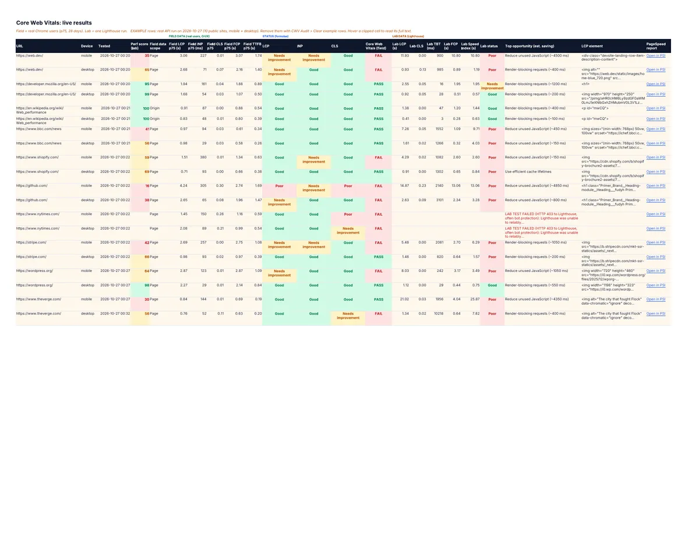
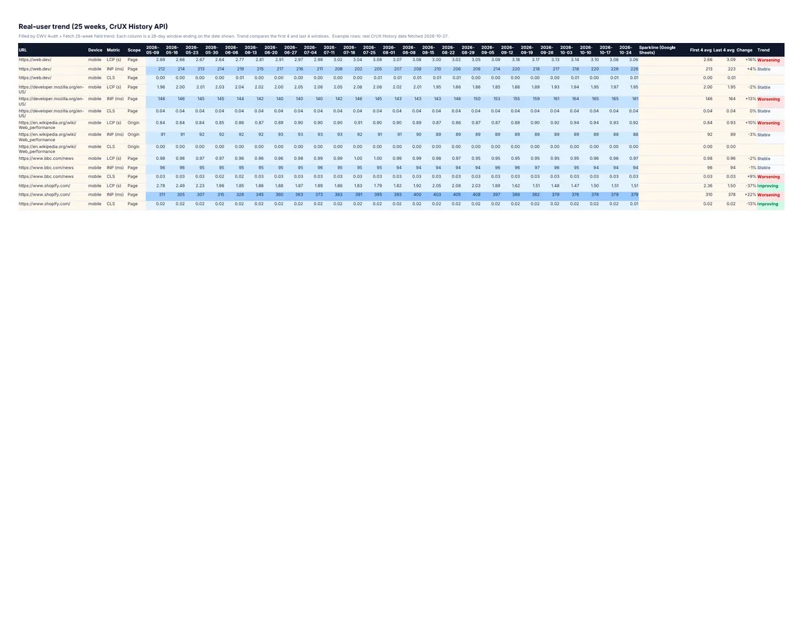
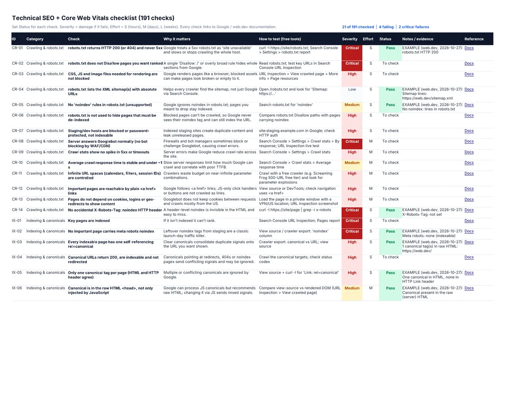
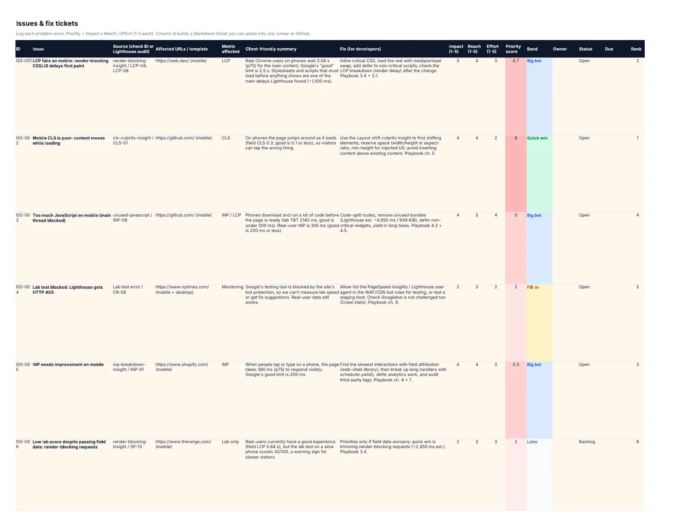
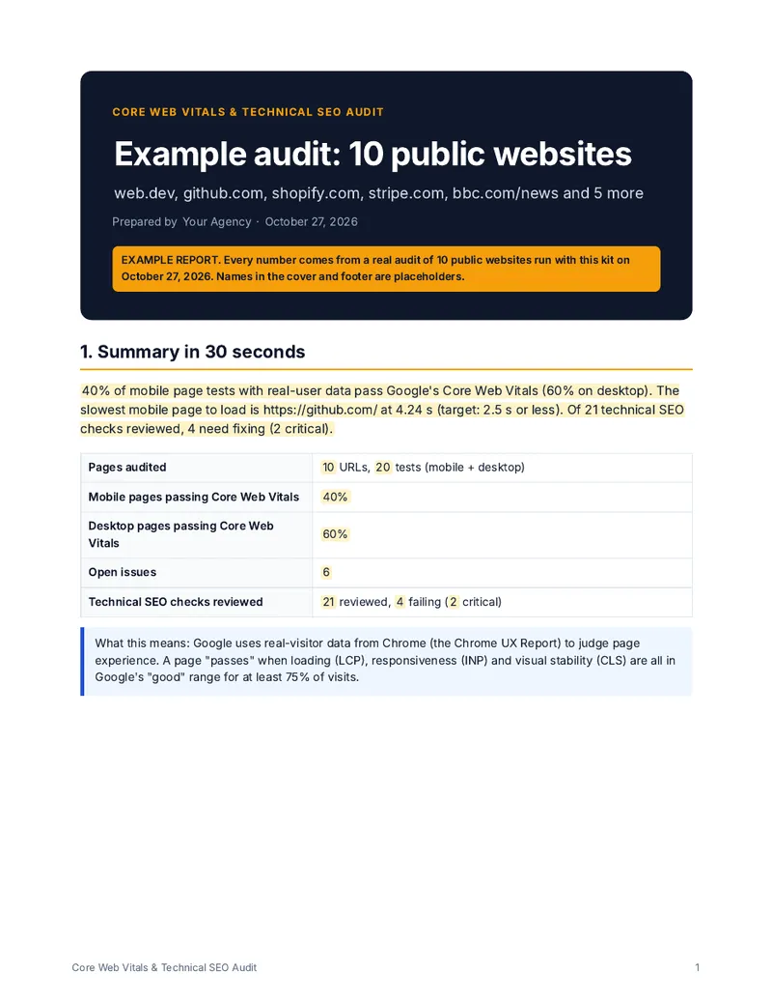
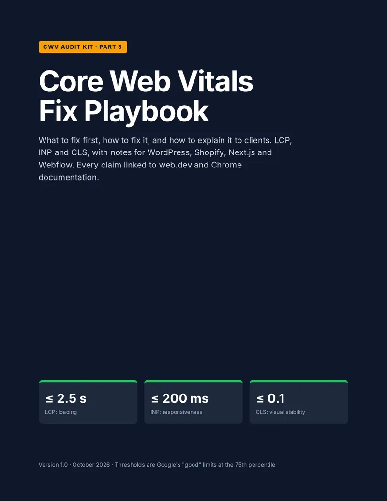

The problem
Google assesses Core Web Vitals from real Chrome users, not from the Lighthouse score you see in your browser. Most audits stop at a static checklist, so you're left guessing which pages actually fail, why, and what to fix first. This kit puts lab data, real-user field data, a full checklist and a prioritised fix list in one sheet.
What you get
- Google Sheets audit workbook: 11 tabs that open as a normal Sheet. No add-on to install and no subscription.
- One-click live audits: an Apps Script menu calls the PageSpeed Insights API (Lighthouse lab data) and the Chrome UX Report API (real-user p75 field data) for every URL, on mobile and desktop.
- 25-week real-user trend from the CrUX History API, with a better or worse call for each metric.
- 191-check technical SEO and Core Web Vitals checklist covering crawling, indexing, canonicals, structured data, mobile, international, security, LCP, INP and CLS. Each check has a severity, effort, why it matters, how to test it and a source link.
- Issues and fix tickets: a priority score (impact × reach ÷ effort) and developer-ready tickets you can paste into Jira or Linear.
- Client report generator: one click fills a Google Doc template with the sheet's numbers: summary, scorecard, top 5 issues, before and after, and a 30/60/90-day plan.
- 21-page Fix Playbook (PDF): how to fix LCP, INP, CLS, TTFB and common Lighthouse findings, with a source link behind every claim.
See inside






How it works
- Import the workbook into Google Sheets and paste in the script. Setup takes about 10 minutes and the README walks you through it.
- Add a free Google API key.
- List your URLs, then click CWV Audit → Run audit. Tests usually take under a minute per URL (slow sites can take several), up to 20 run in parallel, and long lists resume automatically.
- Read pass and fail on CWV Live, work the checklist, then click Build client report.
The example rows in the kit come from a real audit of 10 well-known public websites run on 27 Oct 2026. Only 40% of their mobile pages passed all three Core Web Vitals. Clear them with one click and run your own.
Who it's for
- SEO freelancers and agencies who need a repeatable audit and a report clients can read.
- In-house SEOs and developers who want field data and a prioritised fix list in one place.
- Site owners who failed Core Web Vitals in Search Console and want to know why.
Need hundreds of URLs or a whole sitemap? The kit can import results from our PageSpeed & Core Web Vitals Monitor on Apify. Just want to check one page? Use the free Core Web Vitals checker.
Pricing
The 191-check Technical SEO + Core Web Vitals Checklist is the spreadsheet and 17-page PDF on their own. Pay what you want, from $5 USD. The $29 USD kit adds the live PageSpeed and CrUX sheet, the 25-week trend, fix tickets, the playbook and the client report.
FAQ
Do I need to code?
No. You paste the script once and use the menu after that.
Does it cost anything to run?
The Google APIs are free with your own key.
Does it work in Excel?
The workbook opens in Excel or LibreOffice for viewing and for the checklist. Live audits need Google Sheets.
What about INP and Google's API changes?
INP replaced FID as a Core Web Vital in 2024, and the kit treats it as a first-class metric. Field data is read directly from the CrUX API, not from PageSpeed Insights.
Can I get a refund?
Yes. If the kit doesn't work for you within 30 days, ask for a refund through Gumroad.